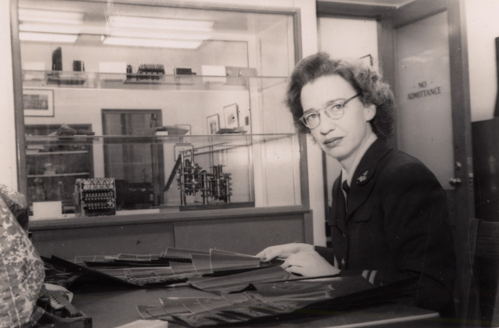
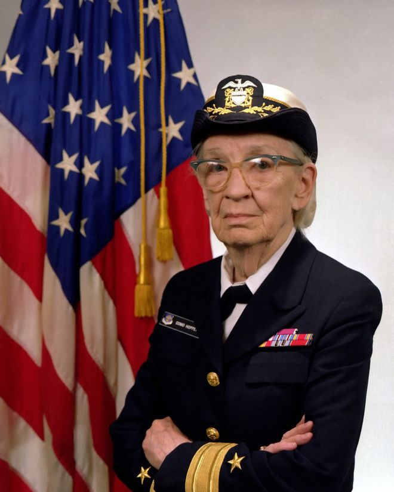
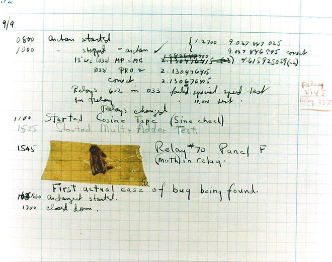

Grace Brewster Murray Hopper nasceu em Nova York, EUA, em 1906 e foi uma Almirante e Analista de Sistemas da Marinha estadunidense, durante das décadas de 1940 e 1950, falecendo em 1992.
Grace é considerada a mãe da programação de computadores. Enquanto atuava na Marinha, desenvolveu a linguagem de programação Flow-Matic, que foi a primeira delas a ser adaptada para o idioma inglês, utilizando palavras como comando. Essa linguagem, apesar de já extinta, serviu como base para a criação do COBOL (Common Business Oriented Language) – primeira linguagem complexa de computador, que é utilizada até hoje por empresas de todo o mundo. Mesmo que ela não tenha participado, efetivamente, da criação dessa linguagem de programação, Grace ficou conhecida como "a vovó do COBOL", por ter desenvolvido a base para sua criação.
Em 1959, Hopper foi convidada para uma reunião no Pentágono, para integrar o subcomitê que desenvolveu as especificações da linguagem COBOL. Também fizeram parte dessa reunião outras seis pessoas, entre elas especialistas da IBM, da RCA e da Sylvania Electric Products.

Como tudo começou
Grace Hopper nasceu em Nova York e era a mais velha de três irmãos. Sendo uma criança inteligente e curiosa, estimulada pelos pais a estudar com as mesmas oportunidades de seus irmãos homens, aos sete anos desvendou o funcionamento de um despertador. A partir daí, seu interesse pelas ciências exatas só cresceu, até que a futura analista de sistemas se graduou em Matemática e Física em 1928, concluindo seu mestrado na Universidade de Yale em 1930. Alguns anos depois, com o Ph.D em Matemática conquistado, Hopper teve sua dissertação “Novos Critérios de Irredutibilidade” publicada e então começou a ensinar Matemática em instituições especializadas.
Na década de 1940, Hopper foi uma das mulheres voluntárias para o WAVES (Women Accepted for Volunteer Emergency Service), uma divisão da Reserva Naval dos Estados Unidos que era constituída exclusivamente por mulheres. Nesse projeto, ela foi designada para trabalhar como tenente júnior em um projeto computacional, em que pôde analisar e escrever artigos sobre o computador Mark I – também conhecido como “Calculadora Automática Controlada por Sequência”.
Em 1941, a cientista tentou entrar para a Marinha, porém foi rejeitada por conta de seu trabalho como professora (considerado muito importante durante a 2º Guerra), pelo seu escasso conhecimento em Física, e outros fatores, como sua baixa estatura e idade, permanecendo no Laboratório de Computação de Harvard até 1949.
O UNIVAC I
Após sair do laboratório de Harvard, Hopper tornou-se funcionária da Eckert-Mauchly Computer como matemática sênior, sendo integrante da equipe de desenvolvimento do UNIVAC I (“Universal Automatic Computer”, ou “Computador Automático Universal”). Esse foi o primeiro computador comercial fabricado e comercializado nos Estados Unidos.

Depois do sucesso do UNIVAC I, Grace Hopper desenvolveu seu próprio compilador – um programa de computador que cria outros programas a partir de um código-fonte escrito em uma linguagem compilada. Na prática, ele traduz um programa de uma linguagem textual para uma linguagem de máquina, e em 1952 a analista de sistemas tinha seu próprio compilador rodando em uma época em que a crença geral era a de que computadores eram capazes apenas de fazer aritmética.
Legado da "Amazing Grace (Hopper)"
Em 1954, Grace Hopper foi nomeada a primeira diretora de programação automática da companhia onde trabalhava, e seu departamento foi responsável por divulgar algumas das primeiras linguagens de programação baseadas em compiladores. Em 1973, Hopper foi nomeada capitã da Marinha norteamericana e aposentou-se em 1986 como contra-almirante.
Entre os inúmeros prêmios que recebeu, estão mais de 40 doutorados honoris causa, a medalha de Serviço Distinto da Defesa e a Medalha Nacional de Tecnologia. Ela ainda foi homenageada ao ver um destróier da Marinha sendo batizado com seu nome. Além disso, também recebeu a primeira edição do prêmio “Homem do Ano” da Ciência da Computação conferido pela Associação de Gerenciamento de Processamento de Dados, tornando-se a primeira mulher (e primeiro cidadão americano) a ser nomeada Distinguished Fellow pela British Computer Society.
Grace, nunca deixou de atuar como pesquisadora ao longo de sua vida, recebendo postumamente, em 2016, a Medalha Presidencial de Liberdade, por conta de seu “papel de liderança ao longo da vida no campo da Ciência da Computação”, concedido pelo presidente da época Barack Obama.
Curiosidade: O surgimento do termo "bug" na computação
Grace Hopper também é apontada como a autora do termo “bug”, que usamos até os dias de hoje para designar uma falha em códigos-fonte. A invenção do termo teria surgido quando Grace tentava encontrar onde estava um problema em no Mark II. Quando o descobriu, ela teria visto um inseto morto dentro da máquina – e acabou chamando o problema de “bug” que, em português, significa “inseto”. Além disso, foi ela quem chamou o ato de remover o inseto de debugging (que virou debugar, em português).
